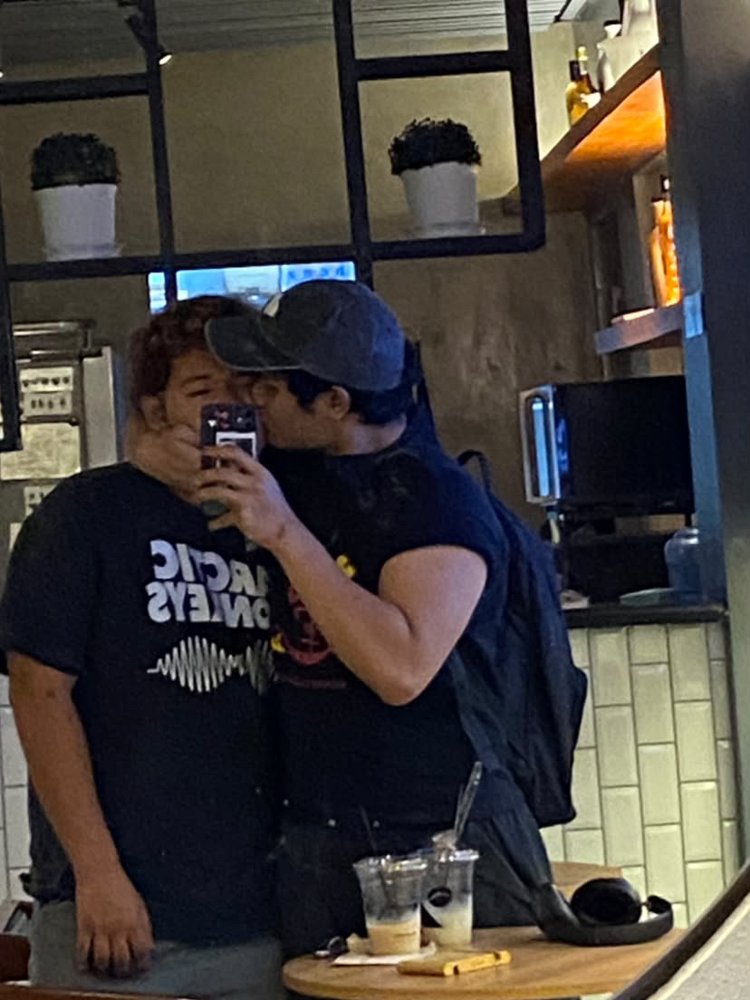

I love you, I’m sorry
A hundred stars, a hundred ways of saying it. Touch them all, and see what they make.

tap a star
0 / 100 lit
For you
Can we talk?
A hundred stars, a hundred ways of saying it. Touch them all, and see what they make.

Can we talk?